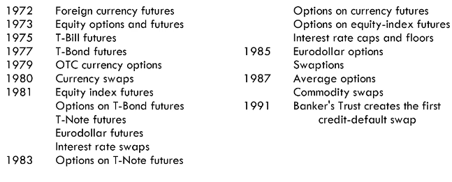

What is a Derivative?
A derivative is an instrument whose value depends on, or is derived from, the value of another asset
Examples are:
Assets
Derivatives
Equities
- Variable Income Securities
- Also known as stocks
- Preferred stock will tell you what dividend you will receive while common stock won't tell you
- The gains you get are from variable dividends and capital gains
Bonds
- Fixed Income
- Most bonds in the US are semi annual
- Bond payments come in the form of a coupon payment in the amount of a percentage of the investment
- If you get a 10% bond with semi annual payments for $1000, you can expect 5% payments ($50) every 6 months
Real Estate
Commodities
Oil, Gas, Corn, Wheat
Anything you consume
Currency
Exchange rate
What is the point of a derivative?
- Helps you hedge (reduce) risk
- Magnify risk
- Arbitrage opportunities
Why derivatives are important
- Derivatives play a key role in transferring risks in the economy
- The underlying assets include stocks, currencies, interest rates, commodities, debt instruments, electricity, insurance payouts, the weather, etc
- Many financial transactions have embedded derivatives
- The real options approach to assessing capital investment decisions has become widely accepted
Early Evolution of Derivatives

In the 1970's, foreign currency futures were introduced.
Before 1970, the derivatives market was small. ONly future contracts had a well-functioning market. Financial derivatives were unknown and non satisfactory option pricing model existed.
Then after